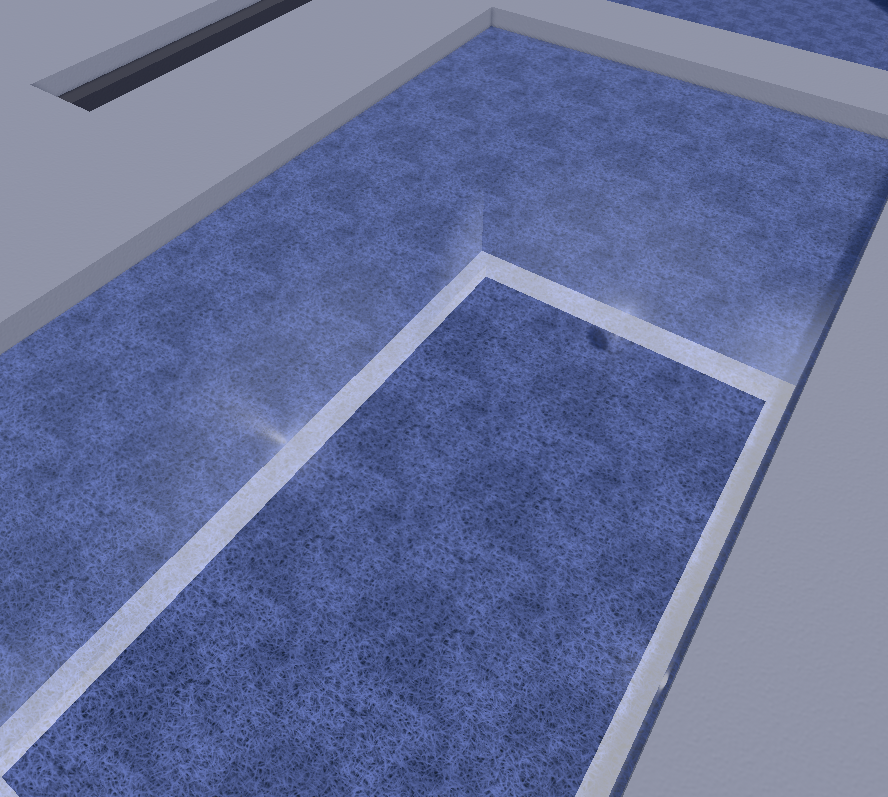
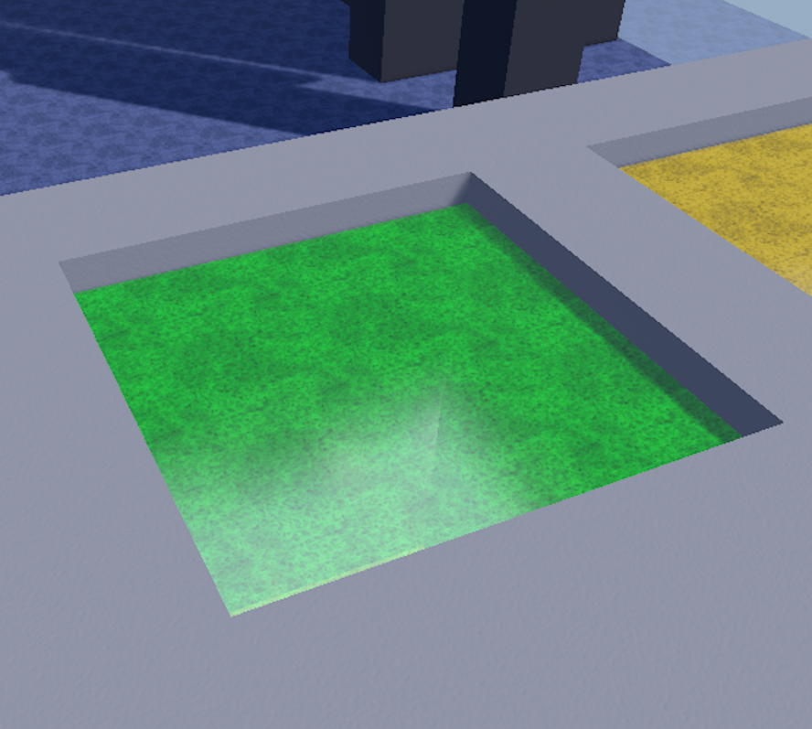
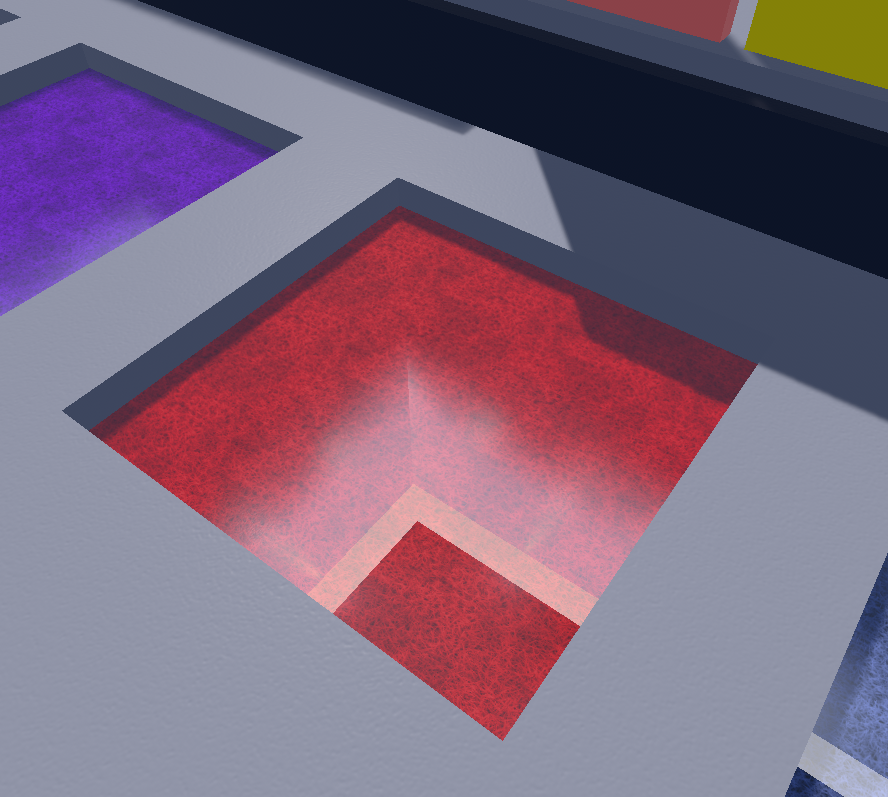
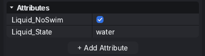
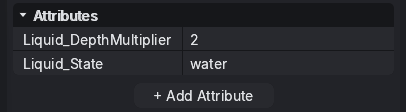

Liquids
Liquids are the core mechanic of Flood Insanity, allowing players to swim inside them while losing Oxygen. When a player's Oxygen reaches 0, they lose the round.
States
There are three states of a Liquid that you can choose: water, acid or lava. The state of a Liquid is defaulted to water if no state is defined or an unknown state is put in. You can change the state of a Liquid either by using the "Liquid_State" attribute, or using the MapScript's "ChangeLiquidState()" function.
| Image | State | Description | Oxygen Drain |
|---|---|---|---|
 |
water | The default state that all liquids are. Does nothing special, it's just a Liquid. | -8 units/s |
 |
acid | A deadlier version of water that drains oxygen around 4x as fast, introduces a special mechanic called "Acid Splash Penalties". Splash penalties are when a part of the Oxygen bar turns red, and re-entering an acid will instantly drain that section of the bar. The only way to get rid of penalties is by waiting outside of a Liquid. | -30 units/s |
 |
lava | Instantly kills the player upon submersion. Swimming in this liquid is impossible, and no amount of Oxygen can make it not kill you. >:)) | Instant kill |
NoSwim
NoSwim is an attribute you can add to a Liquid that makes it so players do not swim inside. Instead, they can run, jump, and use agility like on land.

DrainMultiplier
DrainMultiplier is another attribute you can add to Liquids. This attribute just makes it so that the Oxygen drain is multiplied by whatever this attribute is set to.
DepthMultiplier
DepthMultiplier is very similar to DrainMultiplier, but it changes based on the distance from the top face of the Liquid.
